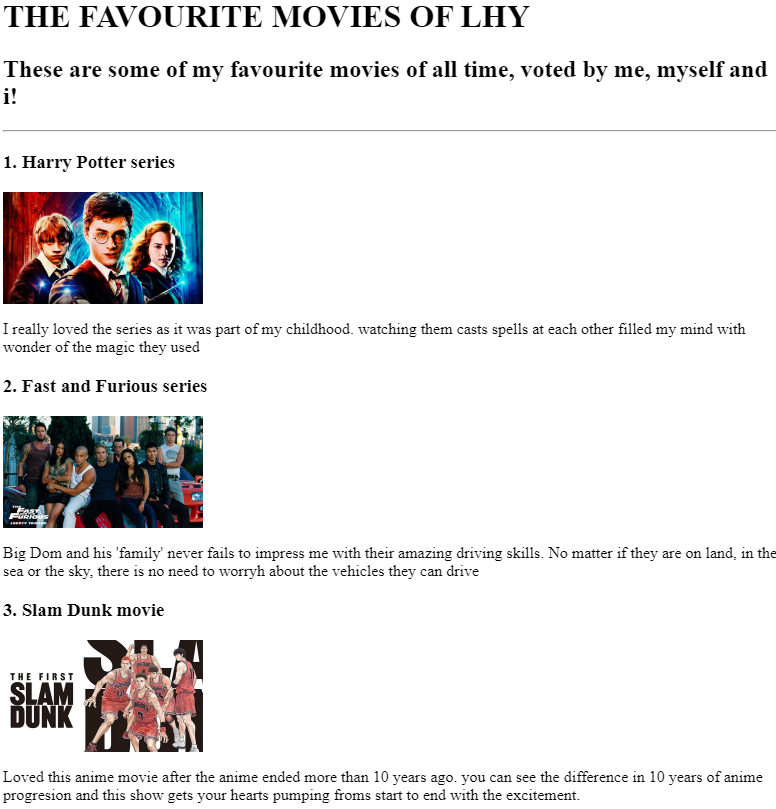
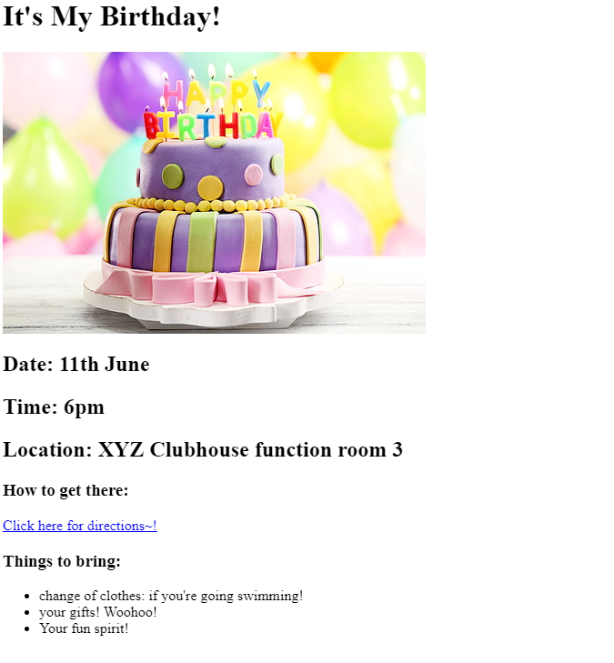

Hern Yi's Portfolio Page!
I am an aspiring web developer!
These are some of the sample projects that i have done while taking Dr. Angela Yu's Web development bootcamp
- My favourite Movies!

- My Birthday Invite Card

Some other projects that i did while attending other courses
- My Own Personal Website
- My Own Personal Blog Theme
- My Own Personal Business Page
About me
Contact me